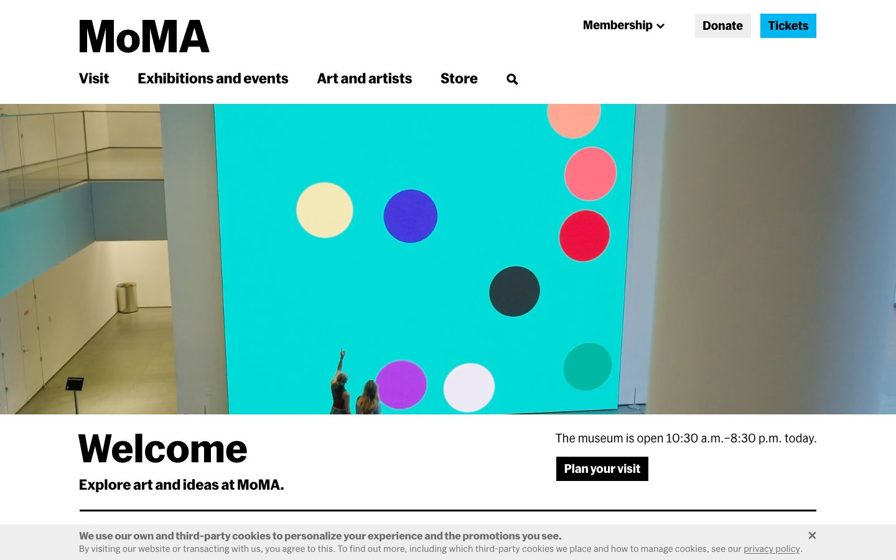

References / Website / 54
Museum of Modern Art website
MoMA’s home page sets its bold grotesque wordmark and navigation flush left on a wide grid above a full-width photograph.
- Source
- moma.org
- Creator
- The Museum of Modern Art
- Style
- International Typographic Style (agent-proposed, not yet reviewed by a person)
- Moods
- Clear, institutional, direct
- Evidence
- Captured with
tools/capture.mjs(headless Chrome, 1440 × 900) on 25 September 2026 and inspected. The screenshot shows the first viewport; the measurement covers up to four screens. A cookie bar covers the bottom 60 pixels of the screenshot. - Reviewed
- Rights
- Third-party work, stored with credit for commentary. License: unverified. Rights policy
Observed
- The MoMA wordmark is set in heavy black sans-serif at the top left.
- The navigation (Visit, Exhibitions and events, Art and artists, Store) is bold black sans-serif, flush left under the wordmark.
- At the top right, Membership, a gray Donate button, and a cyan Tickets button have square corners.
- A full-width photograph shows a large cyan wall with colored dots in a gallery.
- Below it, “Welcome” is set large and bold, flush left, with opening hours and a square black “Plan your visit” button on the right.
- A thick black rule runs under the welcome row.
Why it belongs
The measurement finds one family (MoMA Sans) for 97% of the text, square corners, no shadows, a size range of 3.33, and no centered text. It finds two accent hues in CSS (a green and the cyan button), and the pixel palette adds the hues of the photograph.
The page reads as a well-made institutional site that uses Swiss typography. The grid is not visible in the way it is on Experimental Jetset or ZHdK.
Borrow
Keep the wordmark, navigation, and headings on one left edge, and put the few actions on the right edge of the same grid.
Measured
Machine-extracted by tools/extract-traits.js on . Full measurement.
- Type families
- MoMA Sans (97%), MoMA Sans Bold (3%)
- Type scale ratio
- 1.35
- Median radius
- 0 px
- Mean chroma
- 0.02
- Palette
- #ffffff 61%
- #eeeeee 19%
- #000000 17%
- #8fc421 2%
- #767676 1%
- #00b7f2 0%
- #02b042 0%
- #6bdcc5 0%

